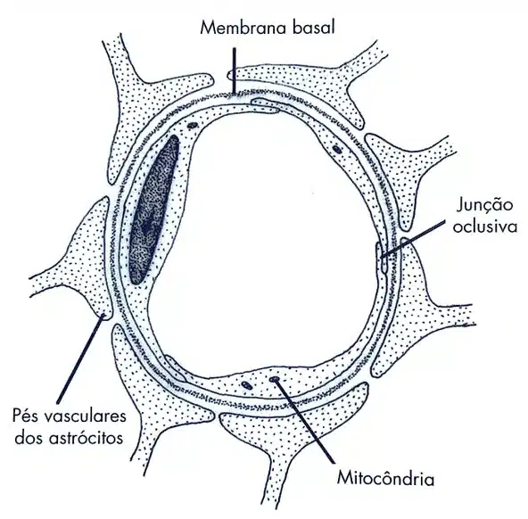
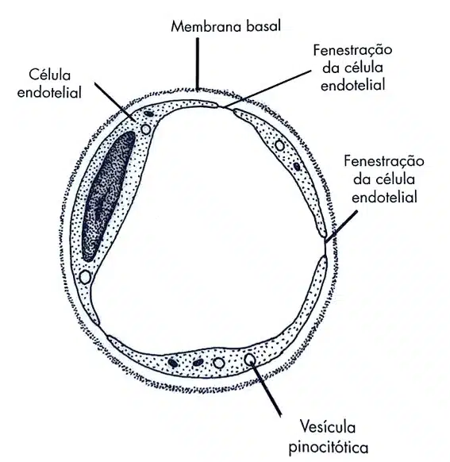
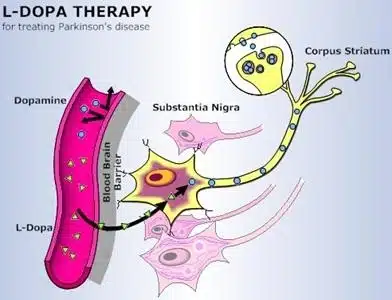
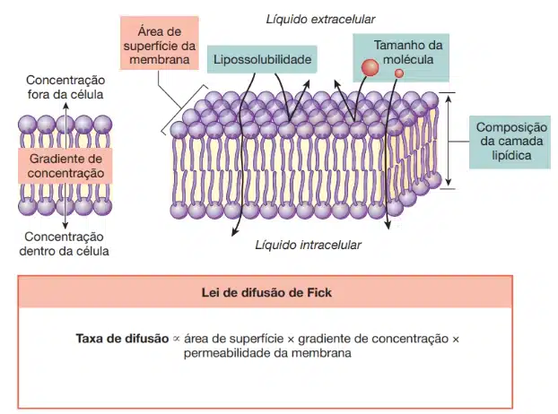
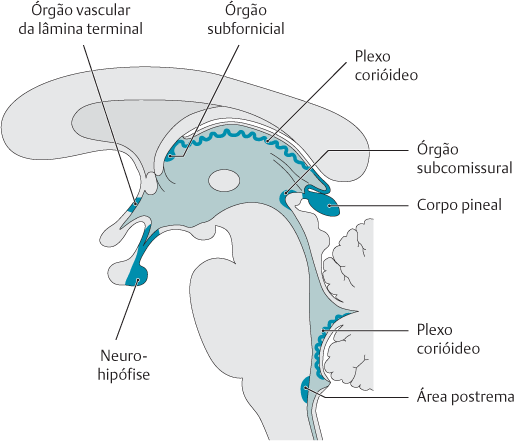

A barreira hematoencefálica é um sistema de proteção que impede substâncias potencialmente prejudiciais de penetrarem no tecido cerebral a partir do fluxo sanguíneo.
Ela é composta principalmente por células endoteliais, que revestem os vasos sanguíneos no cérebro, e por células da glia, que suportam e protegem os neurônios.
A barreira atua como um filtro, permitindo a passagem de moléculas necessárias, como nutrientes e oxigênio, enquanto evita a entrada de toxinas, bactérias e outras substâncias nocivas.
Já a barreira hematoliquórica é um mecanismo semelhante à barreira hematoencefálica, mas que protege o fluido cerebrospinal do sangue periférico.
Ela é composta por células especializadas na parede dos ventrículos cerebrais, conhecidas como plexo coróide.
A barreira hematoliquórica também regula a composição química do fluido cerebrospinal, garantindo que ele forneça aos neurônios os nutrientes e a proteção necessários para seu bom funcionamento.
Em conjunto, essas barreiras são vitais para a saúde e integridade do sistema nervoso central.
O cérebro tem uma camada protetora entre o líquido intersticial e o sangue, que impede substâncias prejudiciais, patógenos e bactérias de entrar no órgão.
Para ativar essa proteção, a maior parte das 640 km de capilares encefálicos cria uma barreira hematoencefálica.
Embora não seja literalmente uma barreira, a grande seletividade da permeabilidade dos capilares protege o encéfalo.
Em sua maioria, junções e poros permeáveis entre células permitem livre troca de solutos entre o plasma e o líquido intersticial.
Nos capilares do encéfalo, entretanto, as células endoteliais formam junções oclusivas entre si, o que evita o movimento de solutos por entre as células.
Aparentemente, a formação das junções oclusivas é induzida por sinais parácrinos provenientes de astrócitos adjacentes, cujos pés envolvem os capilares.
Portanto, é o próprio tecido encefálico que cria a barreira hematencefálica.


A permeabilidade seletiva da barreira hematoencefálica é devida a suas propriedades de transporte.
O endotélio capilar utiliza transportadores e canais de membrana específicos para transportar nutrientes e substâncias úteis do sangue para o líquido intersticial do cérebro.
Outros transportadores de membrana levam resíduos do líquido intersticial para o plasma.
Qualquer molécula solúvel em água que não seja transportada por esses carreadores não pode atravessar a barreira hematoencefálica.
Um exemplo interessante de como a barreira hematoencefálica funciona pode ser visto na doença de Parkinson – uma doença neurológica em que os níveis de neurotransmissores de dopamina no cérebro são muito baixos, já que os neurônios dopaminérgicos estão danificados ou mortos.
A dopamina administrada por via oral ou por injeção é ineficaz, pois não atravessa a barreira hematencefálica.
O precursor da dopamina, L-dopa (levodopa), no entanto, é transportado através das células da barreira hematencefálica por um transportador de aminoácidos.
Tendo acesso à L-dopa no líquido intersticial, os neurônios metabolizam-na à dopamina, permitindo, assim, que a deficiência seja tratada.

Embora a barreira hematencefálica exclua muitas substâncias hidrossolúveis, pequenas moléculas lipossolúveis podem difundir-se através da membrana de suas células.
Essa é uma das razões de por que alguns anti-histamínicos dão sono, e outros, não.
Os anti-histamínicos mais antigos eram aminas lipossolúveis que facilmente atravessavam a barreira hematencefálica, agindo nos centros encefálicos que controlam a vigília.
Os novos fármacos são menos lipossolúveis e, por isso, não têm o mesmo efeito sedativo.

Os órgãos circunventriculares (ependimais) apresentam características estruturais em comum.
São formados por um epêndima modificado, têm relações anatômicas com os ventrículos encefálicos e espaço subaracnóideo e situam-se no plano mediano (exceção: plexo corióideo, mas este se desenvolve a partir de um brotamento ímpar, do plano mediano).
Listaremos agora os órgãos e suas funções:
Neuro-hipófise – Não participa da produção de hormônios mas armazena e secreta dois importantes neuro hormônios, o ADH e a ocitocina.
Plexo corióideo – Estrutura vilosa, com massas emaranhadas de vasos sanguíneos contidas nos ventrículos cerebrais. Regula parte da produção e composição do líquido cefalorraquidiano.
Glândula pineal – Secreta o hormônio melatonina e vários outros hormônios polipeptídicos que possuem a função de regular outras glândulas endócrinas.
Órgão vascular da lâmina terminal – Secreta os hormônios somatostatina, hormônio liberador de hormônio luteinizante (LHRH), motilina; contém células sensíveis à angiotensina II; é um mediador neuroendócrino
Órgão subfornicial – Secreta somatostatina e LHRH nas terminações nervosas; contém células sensíveis à angiotensina II; é essencial na regulação do equilíbrio hídrico (“centro da sede”).
Órgão subcomissural – Continuação do corpo pineal, importante para a manutenção da barreira hematencefálica; a função do órgão não está totalmente clara.
Área postrema – é importante para desencadear o reflexo do vômito. Atrofia no homem na segunda metade da vida (puberdade).

Uma barreira imposta pelo epitélio coroide evita o transporte de materiais do sangue ao LCS. Esta é a barreira hematoliquórica, análoga à barreira hematoencefálica.
Os plexos coroides são estruturalmente similares aos túbulos coletores distais dos rins, que usam filtração por capilar e mecanismos epiteliais de secreção para manter a estabilidade química do LCS.
Os capilares que atravessam os plexos coroides são permeáveis livremente aos solutos do plasma. Entretanto, existe uma barreira nas células epiteliais coroides.
O transporte e a troca de substâncias nos plexos coroides são bidirecionais, responsáveis pela contínua produção de LCS e pelo transporte ativo de metabólitos para fora do SNC, para o sangue.
Sob condições fisiológicas, os líquidos cerebrospinal e extracelular do SNC estão em um estado estacionário.
As concentrações de K+, Ca2+, bicarbonato e glicose no LCS são mais baixas do que no plasma sanguíneo, e o pH é levemente mais baixo.
Essas diferenças resultam da regulação dos constituintes do LCS por transporte ativo no epitélio dos plexos coroides.
Sob condições normais, plasma e LCS estão em equilíbrio osmótico, porque a água segue o gradiente osmótico gerado pelo transporte ativo de solutos.